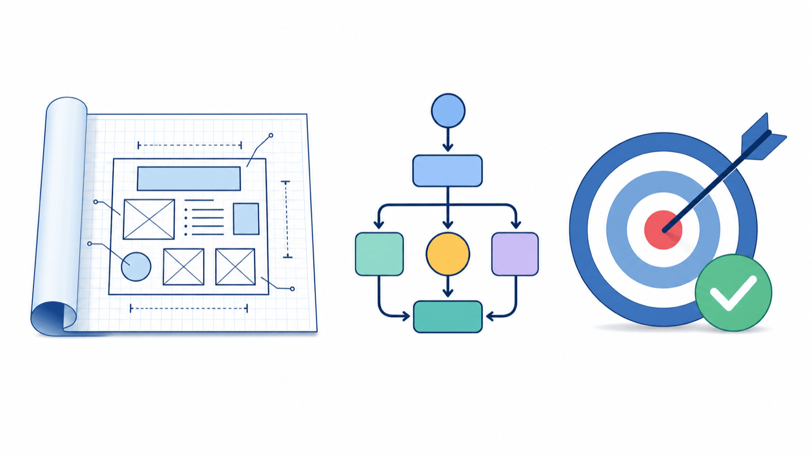
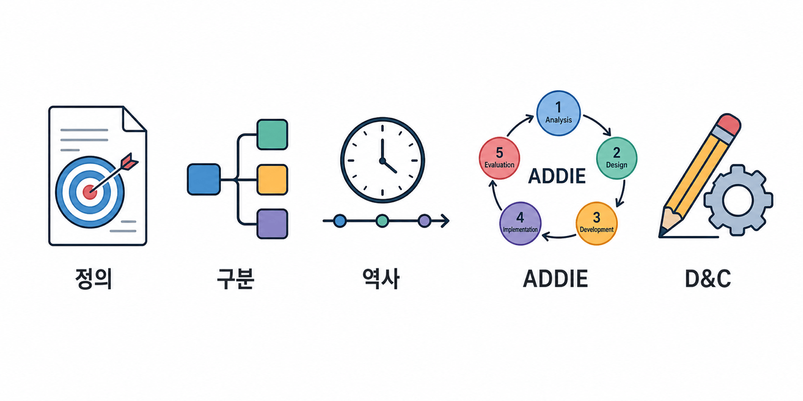
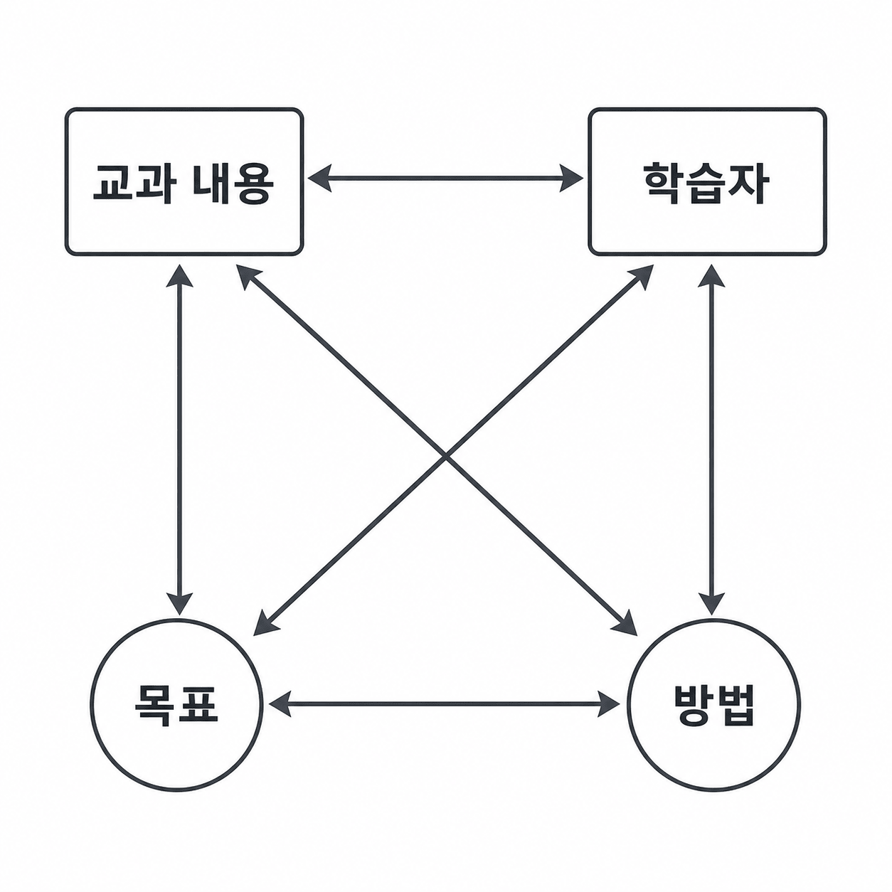
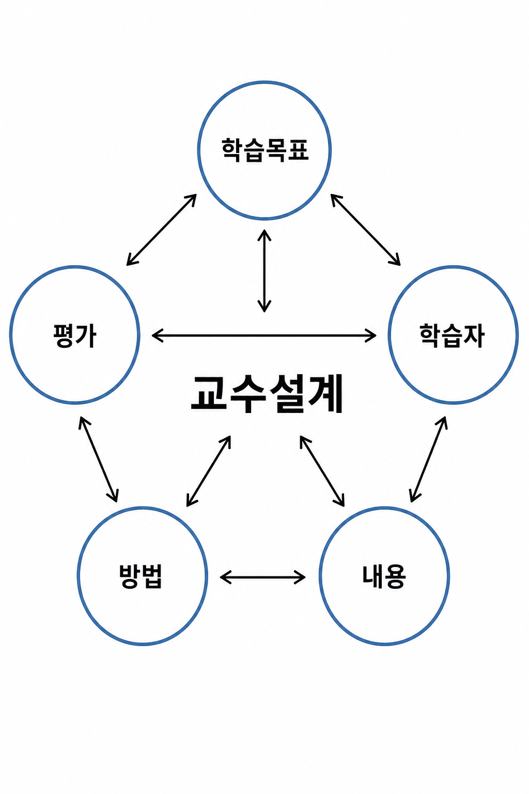
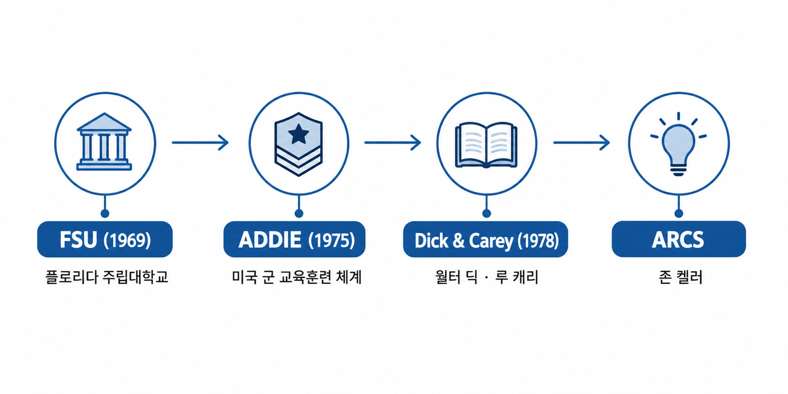
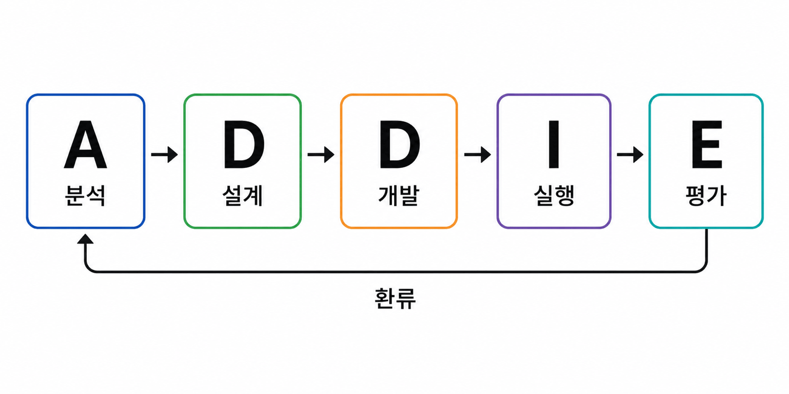
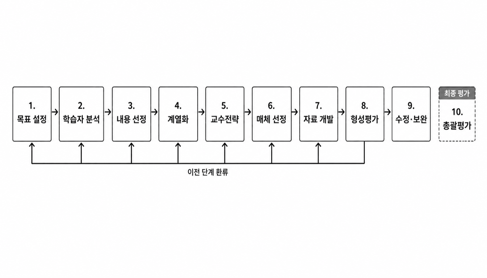

안내 질문: 교수설계는 수업 준비·교재 개발과 어떻게 다른가?
4요소: 교과 내용 · 학습자 특징 · 수업 목표(수행) · 교수 방법

| 특징 | 핵심 내용 |
|---|---|
| 학습자 중심성 | 교수 활동의 초점이 학습자의 수행에 있음 |
| 목적 지향성 | 수업 목표가 수업 내용·활동·평가를 이끄는 준거가 됨 |
| 실증적 설계 | 데이터 수집·측정으로 수업을 체계적으로 개선 |
| 실제적 역량 함양 | '아는 것'을 넘어 '활용할 수 있는' 수행 역량 형성 |
| 구분 | 거시적 교수설계 | 미시적 교수설계 |
|---|---|---|
| 대상 | 교육과정·교과 전체·단원 | 단위 차시 수업 |
| 목적 | 프로그램 운영·평가 전략 개발 | 차시별 구체적 전략 수립 |
| 임용 연계 | 교직논술 — 단원 설계 | 2차 수업 실연 |
안내 질문: 체제이론의 사고방식이 교수설계에 어떻게 적용되었는가?
체제이론: 구성 요소들의 상호작용으로 전체를 이해
수업 = 학습목표 · 학습자 · 내용 · 방법 · 평가의 상호의존적 체제

1969년 FSU 교육공학과 설립 (Morgan 학과장 · Gagné 등) → 세계 교수설계 연구 거점

안내 질문: 효과성·효율성·매력성 세 기준은 왜 모두 필요한가?
교수설계의 성패를 가르는 4가지 구성 요인 — 설계 전에 반드시 파악한다.
| 기준 | 핵심 질문 | 측정 방법 |
|---|---|---|
| 효과성 | 목표를 달성했는가? | 사전·사후 검사 비교 |
| 효율성 | 시간·비용이 최적인가? | 소요 자원 분석 |
| 매력성 | 학습자 반응이 긍정적인가? | 만족도 설문 |
안내 질문: ADDIE의 순환 구조가 교수설계를 왜 '반복적 개선 과정'으로 만드는가?
Branson 등(1975)이 미 육군 대규모 교육훈련 체계 수립을 목적으로 개발
Analysis → Design → Development → Implementation → Evaluation (현대 통용명; 원전 IPISD는 'Control')

| 단계 | 핵심 활동 | 대표 산출물 |
|---|---|---|
| A 분석 | 학습자·내용·환경 파악, 요구 분석 | 요구 분석서 |
| D 설계 | 목표 명세, 평가 도구·교수 전략 수립 | 목표 진술서, 평가 초안 |
| D 개발 | 교재·활동지·멀티미디어 제작 | 교수 자료 |
| I 실행 | 현장 적용·모니터링 | 운영 보고서 |
| E 평가 | 효과성·효율성·매력성 평가 → 환류 | 개선 보고서 |
안내 질문: Dick & Carey 모형이 목표-평가-전략 정렬의 논리를 어떻게 구현하는가?

| 단계 | ADDIE | 핵심 활동 |
|---|---|---|
| ①교수목표설정 | A 분석 | 학습자가 수업 종료 후 달성할 일반적 교수목표 규명 |
| ②교수분석 | A | 하위 기능 분해 및 학습 순서화 |
| ③학습자·상황분석 | A | 사전 지식·동기·환경 파악 |
| ④수행목표진술 | D 설계 | 학습자·조건·기준 명시 |
| ⑤준거지향평가 | D | 수행 목표 기반 평가 도구 개발 |
| ⑥교수전략개발 | D | 최적 교수 방법 선택 |
| ⑦교수자료개발 | D 개발 | 교재·디지털 자료 제작 |
| ⑧형성평가 | E 평가 | 일대일·소집단·현장평가 → 수정 자료 수집 |
| ⑨교수수정 | E | 데이터 기반 전체 설계 수정 |
| ⑩총괄평가 | E | 외부 평가자 최종 효과성 검증 |
| 구분 | ADDIE | Dick & Carey |
|---|---|---|
| 단계 수 | 5단계 | 10단계 |
| 분석 수준 | 거시적 틀 제공 | 각 단계 세분화 |
| 평가 | E단계(형성·총괄 내포) | 형성평가·수정·총괄평가 3단계 |
| 목표-평가 관계 | D단계 내 포함; 절차 연계 암묵적 | ④→⑤ 명시적 선행 순서 |
| 설계 논리 | 순환 5단계 틀 | 목표→평가→전략 명시적 연계 |